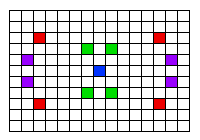

Section 5.6
this and super
Although the basic ideas of object-oriented programming are reasonably simple and clear, they are subtle, and they take time to get used to. And unfortunately, beyond the basic ideas there are a lot of details. This section and the next cover more of those annoying details. You should not necessarily master everything in these two sections the first time through, but you should read it to be aware of what is possible. For the most part, when I need to use this material later in the text, I will explain it again briefly, or I will refer you back to it. In this section, we'll look at two variables, this and super, that are automatically defined in any instance method.
5.6.1 The Special Variable this
A static member of a class has a simple name, which can only be used inside the class definition. For use outside the class, it has a full name of the form class-name.simple-name. For example, "System.out" is a static member variable with simple name "out" in the class "System". It's always legal to use the full name of a static member, even within the class where it's defined. Sometimes it's even necessary, as when the simple name of a static member variable is hidden by a local variable of the same name.
Instance variables and instance methods also have simple names. The simple name of such an instance member can be used in instance methods in the class where the instance member is defined. Instance members also have full names, but remember that instance variables and methods are actually contained in objects, not classes. The full name of an instance member has to contain a reference to the object that contains the instance member. To get at an instance variable or method from outside the class definition, you need a variable that refers to the object. Then the full name is of the form variable-name.simple-name. But suppose you are writing the definition of an instance method in some class. How can you get a reference to the object that contains that instance method? You might need such a reference, for example, if you want to use the full name of an instance variable, because the simple name of the instance variable is hidden by a local variable or parameter.
Java provides a special, predefined variable named "this" that you can use for such purposes. The variable, this, is used in the source code of an instance method to refer to the object that contains the method. This intent of the name, this, is to refer to "this object," the one right here that this very method is in. If x is an instance variable in the same object, then this.x can be used as a full name for that variable. If otherMethod() is an instance method in the same object, then this.otherMethod() could be used to call that method. Whenever the computer executes an instance method, it automatically sets the variable, this, to refer to the object that contains the method.
One common use of this is in constructors. For example:
public class Student {
private String name; // Name of the student.
public Student(String name) {
// Constructor. Create a student with specified name.
this.name = name;
}
.
. // More variables and methods.
.
}
In the constructor, the instance variable called name is hidden by a formal parameter. However, the instance variable can still be referred to by its full name, this.name. In the assignment statement, the value of the formal parameter, name, is assigned to the instance variable, this.name. This is considered to be acceptable style: There is no need to dream up cute new names for formal parameters that are just used to initialize instance variables. You can use the same name for the parameter as for the instance variable.
There are other uses for this. Sometimes, when you are writing an instance method, you need to pass the object that contains the method to a subroutine, as an actual parameter. In that case, you can use this as the actual parameter. For example, if you wanted to print out a string representation of the object, you could say "System.out.println(this);". Or you could assign the value of this to another variable in an assignment statement. In fact, you can do anything with this that you could do with any other variable, except change its value.
5.6.2 The Special Variable super
Java also defines another special variable, named "super", for use in the definitions of instance methods. The variable super is for use in a subclass. Like this, super refers to the object that contains the method. But it's forgetful. It forgets that the object belongs to the class you are writing, and it remembers only that it belongs to the superclass of that class. The point is that the class can contain additions and modifications to the superclass. super doesn't know about any of those additions and modifications; it can only be used to refer to methods and variables in the superclass.
Let's say that the class that you are writing contains an instance method named doSomething(). Consider the subroutine call statement super.doSomething(). Now, super doesn't know anything about the doSomething() method in the subclass. It only knows about things in the superclass, so it tries to execute a method named doSomething() from the superclass. If there is none -- if the doSomething() method was an addition rather than a modification -- you'll get a syntax error.
The reason super exists is so you can get access to things in the superclass that are hidden by things in the subclass. For example, super.x always refers to an instance variable named x in the superclass. This can be useful for the following reason: If a class contains an instance variable with the same name as an instance variable in its superclass, then an object of that class will actually contain two variables with the same name: one defined as part of the class itself and one defined as part of the superclass. The variable in the subclass does not replace the variable of the same name in the superclass; it merely hides it. The variable from the superclass can still be accessed, using super.
When you write a method in a subclass that has the same signature as a method in its superclass, the method from the superclass is hidden in the same way. We say that the method in the subclass overrides the method from the superclass. Again, however, super can be used to access the method from the superclass.
The major use of super is to override a method with a new method that extends the behavior of the inherited method, instead of replacing that behavior entirely. The new method can use super to call the method from the superclass, and then it can add additional code to provide additional behavior. As an example, suppose you have a PairOfDice class that includes a roll() method. Suppose that you want a subclass, GraphicalDice, to represent a pair of dice drawn on the computer screen. The roll() method in the GraphicalDice class should do everything that the roll() method in the PairOfDice class does. We can express this with a call to super.roll(), which calls the method in the superclass. But in addition to that, the roll() method for a GraphicalDice object has to redraw the dice to show the new values. The GraphicalDice class might look something like this:
public class GraphicalDice extends PairOfDice {
public void roll() {
// Roll the dice, and redraw them.
super.roll(); // Call the roll method from PairOfDice.
redraw(); // Call a method to draw the dice.
}
.
. // More stuff, including definition of redraw().
.
}
Note that this allows you to extend the behavior of the roll() method even if you don't know how the method is implemented in the superclass!
Here is a more complete example. The applet at the end of Section 4.7 shows a disturbance that moves around in a mosaic of little squares. As it moves, each square that it visits becomes a brighter shade of red. The result looks interesting, but I think it would be prettier if the pattern were symmetric. A symmetric version of the applet is shown at the bottom of Section 5.7. The symmetric applet can be programmed as an easy extension of the original applet.
In the symmetric version, each time a square is brightened, the squares that can be obtained from that one by horizontal and vertical reflection through the center of the mosaic are also brightened. This picture might make the symmetry idea clearer:

The four red squares in the picture, for example, form a set of such symmetrically placed squares, as do the purple squares and the green squares. (The blue square is at the center of the mosaic, so reflecting it doesn't produce any other squares; it's its own reflection.)
The original applet is defined by the class RandomBrighten. In that class, the actual task of brightening a square is done by a method called brighten(). If row and col are the row and column numbers of a square, then "brighten(row,col);" increases the brightness of that square. All we need is a subclass of RandomBrighten with a modified brighten() routine. Instead of just brightening one square, the modified routine will also brighten the horizontal and vertical reflections of that square. But how will it brighten each of the four individual squares? By calling the brighten() method from the original class. It can do this by calling super.brighten().
There is still the problem of computing the row and column numbers of the horizontal and vertical reflections. To do this, you need to know the number of rows and the number of columns. The RandomBrighten class has instance variables named ROWS and COLUMNS to represent these quantities. Using these variables, it's possible to come up with formulas for the reflections, as shown in the definition of the brighten() method below.
Here's the complete definition of the new class:
public class SymmetricBrighten extends RandomBrighten {
void brighten(int row, int col) {
// Brighten the specified square and its horizontal
// and vertical reflections. This overrides the brighten
// method from the RandomBrighten class, which just
// brightens one square.
super.brighten(row, col);
super.brighten(ROWS - 1 - row, col);
super.brighten(row, COLUMNS - 1 - col);
super.brighten(ROWS - 1 - row, COLUMNS - 1 - col);
}
} // end class SymmetricBrighten
This is the entire source code for the applet!
5.6.3 Constructors in Subclasses
Constructors are not inherited. That is, if you extend an existing class to make a subclass, the constructors in the superclass do not become part of the subclass. If you want constructors in the subclass, you have to define new ones from scratch. If you don't define any constructors in the subclass, then the computer will make up a default constructor, with no parameters, for you.
This could be a problem, if there is a constructor in the superclass that does a lot of necessary work. It looks like you might have to repeat all that work in the subclass! This could be a real problem if you don't have the source code to the superclass, and don't know how it works, or if the constructor in the superclass initializes private member variables that you don't even have access to in the subclass!
Obviously, there has to be some fix for this, and there is. It involves the special variable, super. As the very first statement in a constructor, you can use super to call a constructor from the superclass. The notation for this is a bit ugly and misleading, and it can only be used in this one particular circumstance: It looks like you are calling super as a subroutine (even though super is not a subroutine and you can't call constructors the same way you call other subroutines anyway). As an example, assume that the PairOfDice class has a constructor that takes two integers as parameters. Consider a subclass:
public class GraphicalDice extends PairOfDice {
public GraphicalDice() { // Constructor for this class.
super(3,4); // Call the constructor from the
// PairOfDice class, with parameters 3, 4.
initializeGraphics(); // Do some initialization specific
// to the GraphicalDice class.
}
.
. // More constructors, methods, variables...
.
}
The statement "super(3,4);" calls the constructor from the superclass. This call must be the first line of the constructor in the subclass. Note that if you don't explicitly call a constructor from the superclass in this way, then the default constructor from the superclass, the one with no parameters, will be called automatically.
This might seem rather technical, but unfortunately it is sometimes necessary. By the way, you can use the special variable this in exactly the same way to call another constructor in the same class. This can be useful since it can save you from repeating the same code in several constructors.